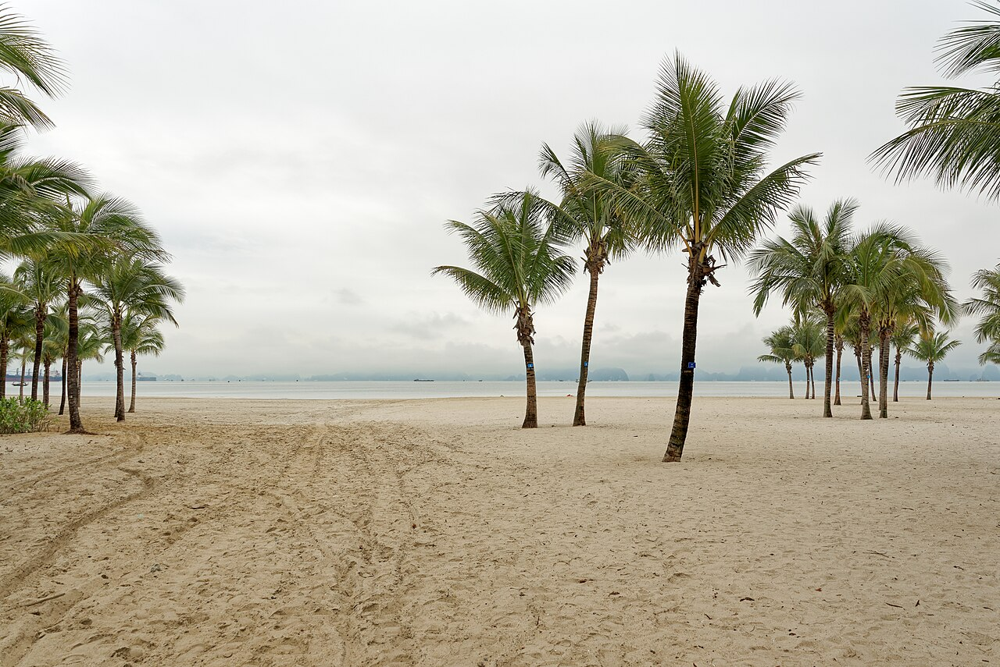

Vịnh trải rộng trên vùng biển Đông Bắc, nơi những đảo đá muôn hình dáng nổi trên mặt nước xanh ngọc. Du khách có thể ngủ đêm trên du thuyền, chèo kayak xuyên hang, ngắm bình minh từ đảo Titop hay khám phá hang Sửng Sốt huyền ảo.
Hải sản Hạ Long phong phú, con người thân thiện, cảnh sắc bốn mùa đều đẹp - đây là điểm đến không thể bỏ lỡ của du khách trong và ngoài nước.